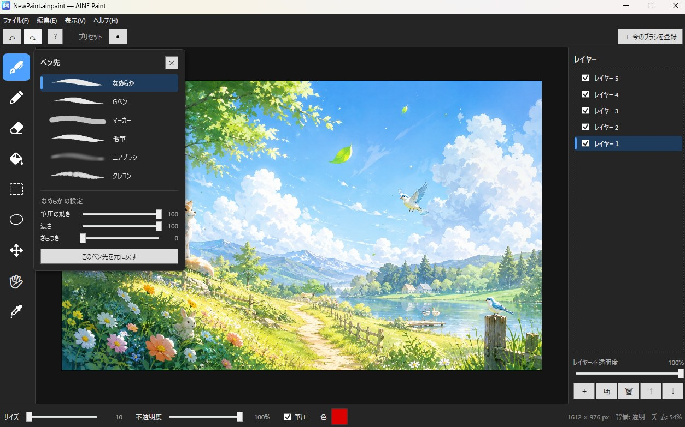

アイデアを、かたちに。
つくったものを、だれかの手元へ。
Studio AINE は、ソフトウェア・アプリ・ゲーム・イラスト・3D など、 デジタル領域のコンテンツを企画・開発・制作するクリエイティブスタジオです。
- Software
- デスクトップアプリケーションの設計・開発・配布
- Apps & Games
- モバイルアプリとゲームの企画・開発
- Illustration
- キャラクターイラストとアニメーション制作
- 3D
- メタバース向けモデルと3Dアイテムの制作
- Web
- Webサイトの設計と実装
AINE Paint
Studio AINE が開発・提供している、Windows 向けのお絵描きソフトウェアです。 はじめて絵を描く人でも迷わないことを設計の基準に置き、 機能の追加よりも、押しやすさと分かりやすさを優先しています。広告は表示しません。
- 6種類のペン先（なめらか・Gペン・マーカー・毛筆・エアブラシ・クレヨン）、筆圧対応
- レイヤー、選択範囲、移動・拡大縮小・回転
- 塗りつぶし、カラーピッカー、スポイト
- 元に戻す 50回、PNG書き出し（透明を保持）
- 独自形式 .ainpaint での保存、PNG / JPG の読み込み
- Platform
- Windows 10 / 11（64bit）
- Price
- 無料
- Install
- インストーラー／Portable 版。.NET のインストール不要、管理者権限も不要
- Version
- v0.4.0
ダウンロード時に警告が出る場合
公開して間もないソフトウェアは、ダウンロード数や配布元の評価が 十分に蓄積されていないため、ブラウザや Windows が 「一般的にダウンロードされていません」「WindowsによってPCが保護されました」 といった警告を表示することがあります。
- ブラウザの警告 — ダウンロード一覧の項目から「保持する」を選びます
- 実行時の警告 — 「詳細情報」をクリックし、「実行」を選びます
AINE Paint はソースコードを GitHub で公開 しています。内容をご確認いただいたうえで、ご自身でビルドすることもできます。

開発のきっかけ
AINE Paint は、身近な人が日常的に使えるお絵描きソフトが見つからなかったことから開発が始まりました。 高機能なソフトは操作の習得に時間がかかり、簡易なソフトはレイヤーや取り消しが足りない。 その間を埋めるものを作る、という出発点です。
そこから生まれたのが 使う人にとって、わかりやすく、使いやすいものをつくる という考え方で、現在は Studio AINE の制作全体を通じた基準になっています。
手掛けているプロジェクト
ソフトウェア、ゲーム、Webアプリ、デジタルコンテンツ。 企画から制作・公開、その後の改善までを一貫して行っています。
Products
AINE Paint
Windows 向けのお絵描きソフトウェア。レイヤー、筆圧、選択範囲と変形に対応し、 広告なしで無料公開しています。
プロダクト詳細 →シマエナガと料理パズル
シマエナガと一緒に料理を作るパズルゲーム。 Studio AINE がキャラクターデザインとイラストを担当した、 とむ 氏との共同制作です。 App Store と Google Play で配信しています。
Illustration — Studio AINE ／ Software — とむ
Brand Project
月曜をラクにする研究所
働く人の日常を少しラクにするためのコンテンツを制作・発信する、 Studio AINE が展開する独立したプロジェクトブランドです。 中核となる Android アプリ「NIGHT OBSERVATORY」は、 習慣化やクリアを求めず、眠れない夜をそのまま受けとめる設計にしています。
公開・提供しているもの
Studio AINE が開発・制作したプロダクトとコンテンツの入手先です。 提供条件は配布先のページに記載しています。
Studio AINE
デジタルコンテンツの企画・開発・制作
ソフトウェア、アプリ、ゲーム、イラスト、アニメーション、3D、Web。 扱う領域は幅広く見えますが、やっていることは一つです。 見た人・使った人が、少し楽になるものをつくる。 それをどの手段で実現するかが違うだけです。
企画から制作、公開、その後の改善までを一貫して行っています。 分業しないぶん、細部の判断まで同じ基準を通せます。 使う人にとって分かりやすいか、使いやすいか。 迷ったときは、いつもそこに立ち返ります。
小規模なスタジオですが、だからこそ 必要な人に必要なものを直接届けることを大切にしています。
- C# / .NET
- Blender
- Live2D
- Procreate
- Adobe Illustrator
- Affinity Designer
- HTML / CSS
お問い合わせ
AINE Paint — 不具合報告・機能の要望
動作の不具合や、追加してほしい機能については GitHub の Issues で受け付けています。 X からのご連絡でも構いません。
GitHub Issues